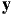
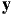
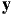
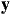

i}i=1n and knowledge of the forward models () that will impose constraints on our observations
. This can be understood with the data flow:
i}i=1n and knowledge of the forward models () that will impose constraints on our observations
. This can be understood with the data flow:
E1. Project Title: Scalable Inference for Probabilistic Joint Inversions, Regression, Classification and Beyond.
Scientists are often concerned with inversion problems where they wish to reason about the latent input to a system given some observations of its output and the system’s forward model. Similarly, they face predictive tasks where, although reasoning about the latent inputs may not be of interest, probabilistic predictions are required and it can be useful to incorporate problem-specific knowledge into the inference algorithm, for example, through a likelihood model.
It turns out that both problems, the inversion problem and the purely predictive problem, can be elegantly modelled within a Bayesian framework by computing posterior distributions and posterior predictive distributions, respectively. The challenge here is exactly this computation, as posterior inference is generally intractable, involving the marginalisation over a large number of states (in the discrete case) or the computation of high-dimensional integrals (in the continuous case). This problem is exacerbated when dealing with nonlinear forward models (or likelihoods) as the interaction between the inputs and the outputs can be quite complex.
Two main approaches have been proposed in the literature to deal with the problem of approximate Bayesian inference, the stochastic approach and the deterministic approach. The former, the stochastic approach, is based on sampling algorithms such as Markov Chain Monte Carlo (MCMC, see e.g. [4] for an overview). The latter, the deterministic approach, is based on optimisation techniques and include Variational Inference (VI, [2]), the Laplace approximation and Expectation Propagation (EP).
MCMC algorithms provide a flexible framework for sampling from complex posterior distributions of
probabilistic models. However, their generality comes at the expense of very high computational cost as well
as cumbersome convergence analysis. Deterministic approaches, such as variational inference, can be
considerably faster than MCMC but they lack MCMC’s broader applicability as derivations of
the corresponding objective function and its gradients are required on a model-by-model basis.
Project Aims. Consequently, there is a tension between computational efficiency and automation. While
stochastic approaches can be fairly generic and automated, they are, in general, very slow. Conversely,
deterministic approaches can be fast but lack the generality of some stochastic methods. This trade-off is
illustrated in Figure 1(a). In this project we aim at bridging this gap by developing efficient and highly
automated deterministic inference algorithms. In particular, we will consider Gaussian process (GP) priors in
order to address problems such as joint inversions, multi-output regression, multi-class classification and
modelling of count data in an automated manner. GPs are notorious for being flexible priors over functions
but also for their poor scalability to large datasets. Therefore, an additional component of this
project is scalability of our inference algorithms to deal with a large number of observations.
Recent International Progress. The general relation to the field of Bayesian inference has been described
above, and the proposed approach will attempt to go one-step further by automating and scaling up Bayesian
inference for models based on Gaussian process priors. However, not surprisingly, there is international
interest in working towards similar goals. In particular, Black box variational inference (BBVI, [9]) has
recently been developed for general latent variable models. Due to this generality, it under-utilises the rich
amount of information available in GP models (see more details in Section E4). A clear disadvantage of
BBVI is that it does not provide an analytical or practical way of learning the covariance hyperparameters of
GPs.
| (a) | (b) |
Another approach closely related to ours is in [8], which investigates variational inference for GP models with one latent function and factorial likelihood. Our approach is more general in that it will allow multiple latent functions, hence being applicable to settings such as multi-class classification, multi-output regression, and joint inversions. Furthermore, we aim to scale up these algorithms so as to deal with a large number of observations, allowing their application to large-scale data fusion problems.
The research proposed in this project is highly significant across a variety of applications that demand uncertainty quantification and propagation, see Section E5 for some examples. Similarly, efficient Bayesian inference is an important problem of modern statistical data analysis. As we shall see in Section E5, the anticipated outcomes of this project can be summarised as:
If successful, the research in the project will advance the state-of-the-art deterministic posterior inference algorithms in that it will eliminate the lengthy and tedious derivations by researchers when developing inference algorithms on a model-by-model basis. It will also allow the applicability of these algorithms to very large datasets, usually found in joint inversion problems, modern machine learning tasks and ‘big-data’ applications. For this, we will build upon the following insightful methodologies and technologies:
The aims of this project will be achieved through the development and extension of techniques
that are sound and have proved successful in uncertainty modelling. In particular, we will use
Bayesian reasoning to address the problem of quantification and propagation of uncertainty.
Conceptual Framework, Design and Methods. The specific machinery underpinning our approach relies
on variational inference. The main justification for variational inference is that there is a clear objective
function that is being optimised and that this objective function is in fact a lower bound on the true marginal
likelihood. The use of variational inference has proved successful in a variety of applications
[7, 5, 3, 1].
We will target joint inversion problems and supervised learning scenarios where we are given a dataset
= {i,i}i=1n and knowledge of the forward models () that will impose constraints on our observations
. This can be understood with the data flow:
|
|
where are the locations of our observations; are the latent functions (or parameters we are interested in); are the forward models; and  are our observations. Note that all these quantities are multi-dimensional variables, meaning that we are dealing with multi-dimensional inputs, multi-dimensional parameters; and multi-dimensional outputs.
An illustration of the conceptual framework of our approach is given in Figure 1(b), where we will make use of the following assumptions and methodology:
 |()).
|()).
With these assumptions it is natural to ask: What types of problems can we address? The answer is a a large
variety of tasks. From non-linear joint inversions to multi-output regression to multi-class classification to
count data and beyond. In fact, this learning machinery will be able to carry out posterior inference even for
problems that are they to be defined. This is because we will not need to know the specifics of the forward
models (or likelihoods) and our only requirement is to be able to evaluate them at a latent function value.
Evaluation. We will evaluate our approach using sound methodologies such as cross-validation and publicly
available data on inversion problems, multi-output regression, multi-class classification, and modelling of
count data. We will compare to state-of-the-art stochastic approaches such as MCMC in terms of accuracy of
the predictions as well as computational cost. We will also compare to hard-coded (problem-specific)
deterministic posterior inference approaches.
Corresponding to the aims of the this project, the expected outcomes are as follows:
National benefit. Joint inversion problems of national interest are common in the exploration of natural and mineral resources, where one wishes to infer geophysical parameters in the Earth’s subsurface by measuring related physical quantities well before a drilling campaign starts. The importance of probabilistic outputs can also be encountered in purely predictive tasks, such as modelling of solar irradiance in the Australian continent.
In both cases, the joint inversion problem and the purely predictive problem, there is a need for having inference algorithms capable of dealing with very complex forward models (or likelihood functions) without resorting to expensive MCMC simulations. More importantly, as the number of measurements available in these types of applications gets bigger and bigger, scalability becomes a necessary component of modern inference algorithms.
It is necessary to emphasise that this project is the first stage of a much more ambitious goal, that of introducing the so-called ‘big-data’ technologies into scientific research. By having scalable probabilistic inference algorithms that (a) are applicable to a wide range of problems; and (b) can be easy to parallelise, we aim to change the way many areas of science currently carry out the quantification and propagation of uncertainty. Our ultimate goal is to reduce the computational time and/or human time involved in the process of evaluating uncertainty through MCMC simulations and/or lengthy model-specific derivations.
Chief Investigator. The CI of this project, Dr. Edwin Bonilla, will take full responsibility for the conduct of
the research. In particular, he will investigate the techniques proposed, carry out the corresponding analysis
and develop the analytical tools required to achieve the aims of this project. He will closely supervise the
Research Assistant in order to deliver the expected outcomes outlined in section E5. Dr. Bonilla’s extensive
expertise in modelling with Gaussian process (GP) priors is crucial to this project and his recent work on
scaling up GP-based regression models [6] will underpin the efficiency and scalability component of the
project.
Research Assistant. The 50% Research Assistant (RA) will be responsible for collaborating closely with the
CI and for the development of the corresponding algorithms. It is expected that this RA will carry out
research activities, discussing existing approaches and alternative methods for the proposed research.
Therefore, as can be seen in Section B1, a level A step 1 academic has been requested for this
position.
[1] Mark Girolami and Simon Rogers. Variational Bayesian multinomial probit regression with Gaussian process priors. Neural Computation, 18(8):1790–1817, 2006.
[2] Michael I Jordan, Zoubin Ghahramani, Tommi S Jaakkola, and Lawrence K Saul. An introduction to variational methods for graphical models. Springer, 1998.
[3] Miguel Lázaro-Gredilla. Bayesian warped Gaussian processes. In Advances in Neural Information Processing Systems, 2012.
[4] Radford M. Neal. Probabilistic inference using Markov chain Monte Carlo methods. Technical report, Department of Computer Science, University of Toronto, 1993.
[5] Trung V. Nguyen and Edwin Bonilla. Efficient variational inference for Gaussian process regression networks. In International Conference on Artificial Intelligence and Statistics, 2013.
[6] Trung V. Nguyen and Edwin V. Bonilla. Collaborative multi-output Gaussian processes. In Uncertainty in Artificial Intelligence, 2014.
[7] Hannes Nickisch and Carl Edward Rasmussen. Approximations for binary Gaussian process classification. Journal of Machine Learning Research, 9(10):2035–2078, 2008.
[8] Manfred Opper and Cédric Archambeau. The variational Gaussian approximation revisited. Neural Computation, 21(3):786–792, 2009.
[9] Rajesh Ranganath, Sean Gerrish, and David M. Blei. Black box variational inference. In International Conference on Artificial Intelligence and Statistics, 2014.
[10] Mark W. Schmidt, Nicolas Le Roux, and Francis Bach. Minimizing finite sums with the stochastic average gradient. Computing Research Repository, 2013.